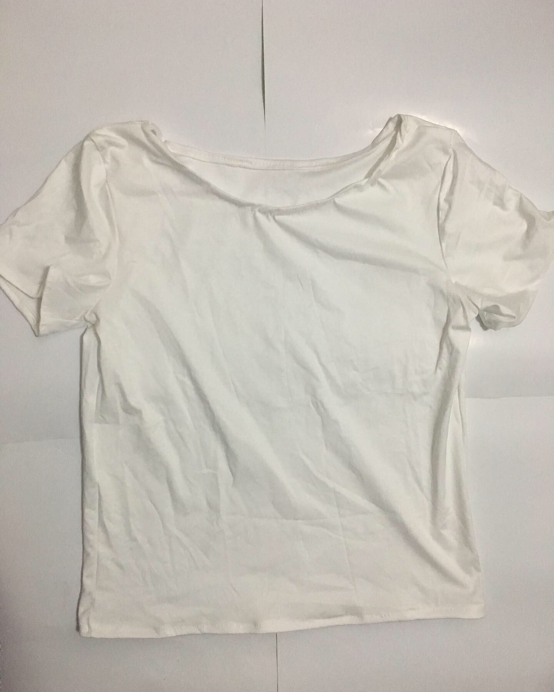
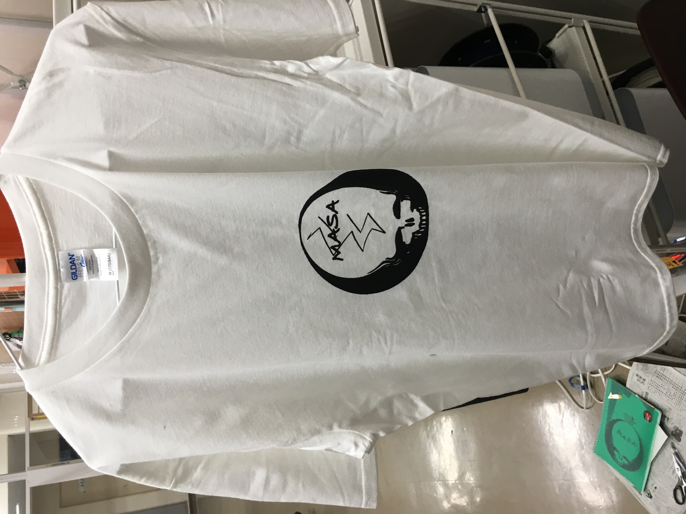
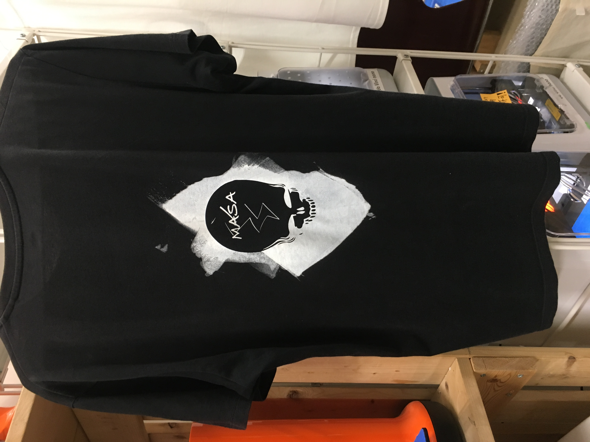

２０１７年、２月、茅ヶ崎にあるDUDE INNというお店を訪ねた。
広がるのは、ケミカルな色をした服や見たことのないデザインの服、あっけにとられた。
しかし、なぜか居心地が良いことに気づいた。
彼らの服を見るうちに、自分のオリジナルを作ると決心した。
■ロックミシン、ミシンを使える様にするために、簡単なものということで作った。
紐を通そうとしたが、サイズ幅が狭く、通らなかった。
既存のスマホケースにUVプリンターで印刷した。
イラストレーターで書いた、 I don`t wanna go (to) Mars は
火星に行くよりも、まず、地球のことを考えないといけないのかという思いを込めた。
地球にある様々な問題、特に環境問題は私たちが真剣に考えないといけない問題である。

生地選びから、時間がかかってしまった。
布屋さんに行ったことがなかったため、何を買ったらいいかわからなかった。
tシャツのため、コットンスキニーの生地を購入。糸もニット用のもの。
針はニット用に鋭くないものを選んだ。
ロックミシンおよびミシンで縫っていったが、あまりうまくいかず
サイズが子供サイズになってしまった。


Tシャツは自分が持っているものを使って、シンプルな色を使った。
初めてのシルクスクリーンだったため、手順を踏みながら、制作した。
イラストレーターで書いたデザインのアウトラインを引き、反転する。
SVGファイルで保存し、canvas siteでデータを作る。
そのデータをSCAN N CUT に読み込み、シールを入れて、
切り込みを入れたシールを作る。
色を入れる部分の色のシールを剥がし、保護フィルムを貼る。
ボードに貼り付ける。
最後に布に色をシルクスクリーンする。